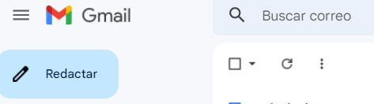
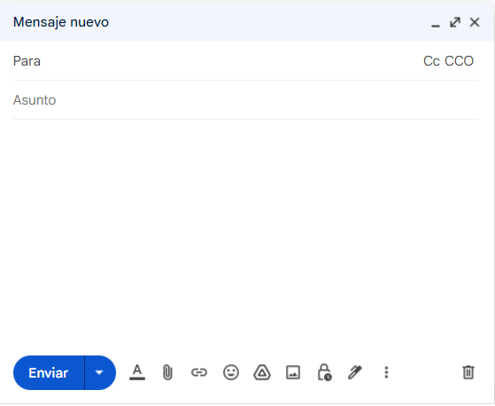
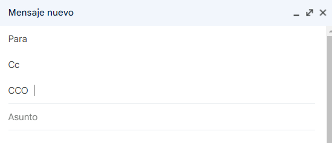

Cliente de correo
Es un programa de escritorio que nos permite acceder a nuestros correos electrónicos sin necesidad de utilizar un navegador web. Están vinculados a las cuentas de correo electrónico a través de protocolos POP3 o IMAP y, como los Webmails, ofrecen acceso a los contactos, a los mensajes, características de chat, lector de RSS, etc, pero lo hacen con un nivel de seguridad mayor y a una escala más avanzada.
Ejemplos de clientes de correo son Microsoft Outlook y Thunderbird de Mozilla, el primero es de pago y el segundo gratuito.
Webmail
Se trata de un sistema de acceso al correo electrónico que permite gestionar nuestros mensajes mediante un navegador web. La mayoría de los sistemas de Webmail son gratuitos. Algunas de las opciones gratuitas más populares son Gmail y Outlook.com.
Gmail
Escribir y enviar un correo nuevo
Pulsamos en el botón Redactar y se nos abre una ventana de diálogo donde completaremos los diferentes campos (destinatario(s), mensaje, asunto...). Es conveniente empezar desde abajo hacia arriba, es decir, adjuntar primero los archivos, si los hay, luego el cuerpo del mensaje, después el Asunto y por último, el o los destinatarios. Así evitamos que se nos olvide adjuntar archivos o que enviemos por error el correo de manera incompleta, ya que hasta que no se especifique el destinatario, el mensaje no se envía.


Debemos conocer la dirección de correo de la persona o las personas a las que queremos enviarles el correo. Hay tres apartados donde podemos escribir una dirección: Para, CC o CCO.

Si queremos enviar el correo a una sola persona, no importa en qué apartado escribamos la dirección. Sin embargo, cuando necesitamos que ese mismo correo lo reciba más de una persona, enviar un mensaje para cada una de ellas sería una pérdida de tiempo ya que podemos agregar varios contactos, en cualquiera de los tres apartados.
CC significa "con copia". Todos los contactos que incluyamos en este campo reciben el correo y todos pueden ver los contactos a los que se envió el correo. Para responder, si usamos Responder a todos, nos aseguramos de que todos los contactos en CC reciban la respuesta. Esto es recomendable cuando el asunto en cuestión implica a varias personas y todas ellas deben estar informadas.
CCO significa copia oculta. Los contactos que incluyamos en este campo no será visibles para los destinatarios incluidos en el campo "Para" o en CC. Se utiliza cuando queremos agregar a una persona que necesita saber que mandamos el mensaje, pero que no tiene que ver con el asunto de lo que se está tratando en ese correo electrónico. También es una opción cuando queremos añadir a personas de mando o de supervisión, para que estén enteradas de que un grupo de personas ya recibió la comunicación.
Cuando recibimos un mail que contenga contactos tanto en CC como en CCO y le damos a Responder, el contacto al que le estaremos dando respuesta es el destinatario principal, es decir, el del campo "Para" y únicamente él lo recibirá.
Si pulsamos en Responder a todos, tanto el destinatario principal como todos los contactos en CC recibirán la respuesta, pero no los contactos que están en CCO.
Asunto: este campo es importante ya que lo lee el destinatario antes de abrir el correo. Aquí escribimos el tema del mensaje. Tiene que ser corto, no tiene por qué tener una sintaxis del todo correcta, ya que importa que sea más rápida la comprensión del mensaje.
Cuerpo del mensaje: se compone de un saludo, el contenido del mensaje y una despedida. A continuación, podemos incluir los datos del que envía el mensaje (nombre, cargo en la empresa, teléfono de contacto...).
Ficheros adjuntos: usamos el botón del clip que hay a la derecha del botón Enviar para localizar y adjuntar uno o más archivos que queramos enviar con el mensaje.
Cada cierto tiempo, el correo que estamos escribiendo se va guardando, de tal manera que, si cerramos la ventana de edición del correo, podemos ir a la carpeta Borradores, abrirlo desde ahí y seguir editándolo o enviarlo.
En la carpeta Enviados se halla la lista de todos los emails que hemos enviado.